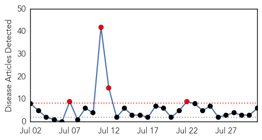
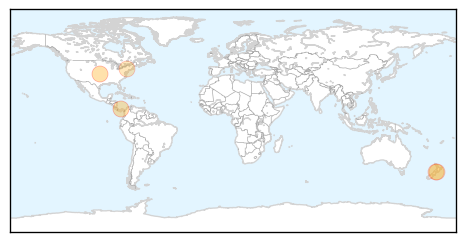
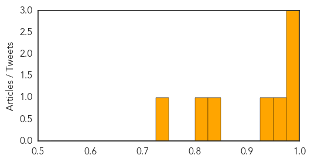

Influenza
30-Day Web Trend
4 alerts, 0 warnings

30-Day Twitter Trend
2 alerts, 0 warnings
Article Locations
Article Confidences
Top Articles:
- 0.993
- Deadly encounters: an infectious world
- 0.966
- Notification of a Single Source Cooperative Agreement Award for the Gorgas Memorial Institute
- 0.800
- Today's stories from newspapers in Ottawa
- 0.787
- Today's stories from newspapers in Orangeville
- 0.787
- Today's stories from newspapers in Orangeville
- 0.787
- Today's stories from newspapers in Orangeville
Top Tweets:
-
No tweets found for Jul 31, 2014
Chikungunya
30-Day Web Trend
1 alerts, 0 warnings

30-Day Twitter Trend
0 alerts, 0 warnings

Article Locations
Article Confidences
Top Articles:
- 0.993
- 17 cases of chikungunya now confirmed
- 0.991
- VGTI Florida applies for patent for vaccine therapy for chikungunya, dengue fever
- 0.985
- Nasty bugs sicken more in Jacksonville, including this year's first case of 'flesh-eating bacteria'
- 0.954
- Officials: 2 Maine Travelers Infected by Mosquitos
- 0.949
- Here Comes Chikungunya: The painful, mosquito-borne virus is continuing its assault on the U.S.
- 0.828
- Chikungunya cases now confirmed in St Vincent, Bequia and Canouan
- 0.801
- Guest column: Protecting public's health is role of health departments
- 0.736
- Missionary to Haiti tells of Chick V pain
Top Tweets:
-
No tweets found for Jul 31, 2014